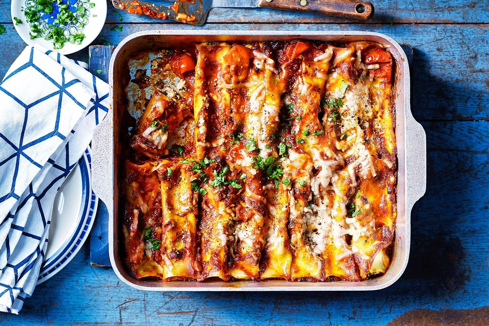

Spinach & Ricotta Canneloni

Description
Imagine coming home to this Spinach and Ricotta Cannelloni…… a juicy spinach and ricotta filling inside cannelloni pasta tubes, topped with a simple homemade tomato basil sauce and melted cheese.
Ingredients
Sauce:
- 1bsp olive oil
- 1 garlic clove
- 1 small onion
- 800g crushed tomato
- 1 cup water
- 3/4 tsp salt
- handful basil leaves
Filling:
- 250g frozen chopped spinach
- 500g ricotta
- 1/3 cup grated parmesan
- 1 cup shredded cheese
- 1 egg
- 1 large garlic clove
- Grated fresh nutmeg
- 1/2 tsp salt and peper
Canneloni:
- 18-22 dried canneloni tubes
- 1-22/2 cups shredded Mozarella
- more basil
Steps
Sauce:
- Heat oil in a large skillet over medium high heat. Add garlic and onion, cook for 2 – 3 minutes until translucent. Add tomato, water, salt and pepper.
- Stir, reduce heat to medium, simmer for 5 minutes. Optional: add 1/2 cup water and blend sauce until smooth (I do this for guests!).
- Stir through basil or dried herbs. Set aside.
Filling:
- Place spinach in a colander and press out most of the liquid (don’t need to thoroughly squeeze dry).
- Place Spinach in bowl with remaining Filling ingredients. Mix, taste, adjust salt and pepper to taste (different cheeses have different saltiness).
Assemble & Bake
- Preheat oven to 180C/350F.
- Choose a baking pan which will comfortably fit about 20 cannelloni – mine is 21 x 26 cm / 8.5 x 10.5″.
- Spread a bit of Sauce on the base.
- Transfer Filling to a piping bag with a large nozzle (that fits in the tubes), or use a strong ziplock bag. Or do this step using a knife (it’s a bit tedious though!).
- Pipe the filling into the tubes. Place in baking dish.
- Pour over remaining Sauce, covering all the tubes. Cover with foil, then bake for 25 minutes.
- Remove foil, scatter over cheese. Return to oven for 10 minutes until cheese is melted.
- Serve, garnished with extra basil if desired.
BON APETIT!